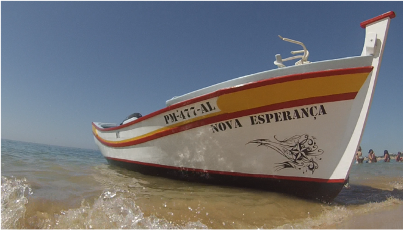

Barcelos Náutica
Venda de barcos | Formação | Eventos
| Início | Barcos | Formação | Eventos | Serviços | Galeria | Sobre | Contacto |
Barcos à Venda
Lancha Rápida 6m Ideal para passeios no rio e mar. Motor potente e confortável. €12.500 |
 Barco de Pesca Tradicional Perfeito para pesca recreativa. Estável e resistente. €8.900 |